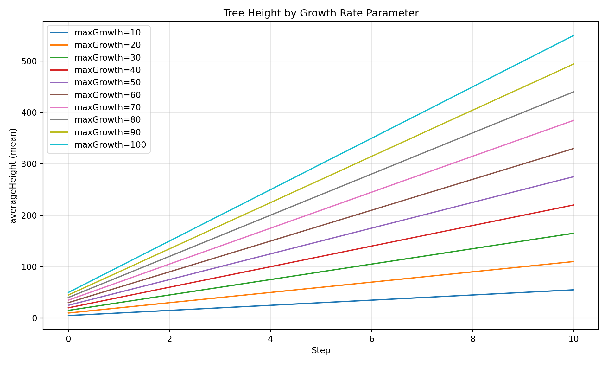

Tracking: Register runs in a DuckDB-backed registry with session and config tracking
Data Loading: Import cell-level CSV exports into queryable tables
Analysis: Query results across parameter values and replicates
Diagnostics: Quick matplotlib visualizations for simulation sanity checks
Visualization: Create publication-quality plots with R/ggplot2 integration
This demo walks through a complete parameter sweep workflow using SweepManager, which encapsulates the common workflow of expanding, running, and collecting sweep results. For a more detailed walkthrough using each component directly, see demo_manual.qmd.
We vary the maxGrowth parameter from 10 to 100 meters/step across 10 experiments, each with 3 replicates, then load, query, and visualize the results.
Prerequisites
Ensure the Josh JAR is available at jar/joshsim-fat.jar and joshpy is installed:
pip install -e'.[all]'
For visualization, ensure R is installed with the following packages:
print(f"Total runs: {len(MAX_GROWTH_VALUES)} x {config.replicates} = {len(MAX_GROWTH_VALUES) * config.replicates}")
Total runs: 10 x 3 = 30
Let’s examine the source files. The .josh file defines the simulation, and the .jshc.j2 template provides parameterized configuration:
Josh Source
print(SOURCE_PATH.read_text())
# A configurable version of hello_cli.josh
# Uses config variables from sweep_config.jshc for parameterization
start simulation Main
grid.size = 1000 m
grid.low = 33.7 degrees latitude, -115.4 degrees longitude
grid.high = 34.0 degrees latitude, -116.4 degrees longitude
grid.patch = "Default"
steps.low = 0 count
steps.high = 10 count
exportFiles.patch = "file:///tmp/hello_josh_{maxGrowth}_{replicate}.csv"
end simulation
start patch Default
ForeverTree.init = create 10 count of ForeverTree
export.averageAge.step = mean(ForeverTree.age)
export.averageHeight.step = mean(ForeverTree.height)
end patch
start organism ForeverTree
maxGrowth.init = config sweep_config.maxGrowth
age.init = 0 year
age.step = prior.age + 1 year
height.init = 0 meters
# maxGrowth is configurable via sweep_config.jshc
height.step = prior.height + sample uniform from 0 meters to maxGrowth
end organism
start unit year
alias years
alias yr
alias yrs
end unit
Template Configuration
print(TEMPLATE_PATH.read_text())
# Auto-generated configuration for hello_cli_configurable.josh
# Parameter sweep: maxGrowth={{ maxGrowth }}
# Maximum growth per timestep (meters)
maxGrowth = {{ maxGrowth }} meters
Notice that the .josh file references config sweep_config.maxGrowth - this pulls the value from our generated config file at runtime.
Step 2: Create SweepManager
The SweepManager encapsulates the entire sweep workflow. It uses a builder pattern for flexible configuration:
with_registry(): Configure DuckDB registry (path or existing instance)
with_cli(): Configure JoshCLI (JAR path or existing instance)
build(): Expand jobs, create session, and register configurations
from joshpy.sweep import SweepManager# Registry path - saved to disk for use in demo_analysis.qmdREGISTRY_PATH ="demo_registry.duckdb"# Create manager with builder patternmanager = ( SweepManager.builder(config) .with_registry(REGISTRY_PATH, experiment_name="growth_rate_sweep") .with_cli(jar_path=Path("../jar/joshsim-fat.jar")) .build())print(f"Session ID: {manager.session_id}")
if results.failed >0:print(f"Failed: {results.failed}")for job, result in results:ifnot result.success:print(f" maxGrowth={job.parameters['maxGrowth']}: {result.stderr[:100]}...")
Step 4: Load Results
The load_results() method automatically discovers export paths from the Josh file, resolves template variables for each job, and loads CSV results:
print("Loading CSV exports into registry...")
Loading CSV exports into registry...
rows_loaded = manager.load_results()
Loading patch results from: /tmp/hello_josh_{maxGrowth}_{replicate}.csv
Loaded 34782 rows from hello_josh_10_0.csv
Loaded 34782 rows from hello_josh_10_1.csv
Loaded 34782 rows from hello_josh_10_2.csv
Loaded 34782 rows from hello_josh_20_0.csv
Loaded 34782 rows from hello_josh_20_1.csv
Loaded 34782 rows from hello_josh_20_2.csv
Loaded 34782 rows from hello_josh_30_0.csv
Loaded 34782 rows from hello_josh_30_1.csv
Loaded 34782 rows from hello_josh_30_2.csv
Loaded 34782 rows from hello_josh_40_0.csv
Loaded 34782 rows from hello_josh_40_1.csv
Loaded 34782 rows from hello_josh_40_2.csv
Loaded 34782 rows from hello_josh_50_0.csv
Loaded 34782 rows from hello_josh_50_1.csv
Loaded 34782 rows from hello_josh_50_2.csv
Loaded 34782 rows from hello_josh_60_0.csv
Loaded 34782 rows from hello_josh_60_1.csv
Loaded 34782 rows from hello_josh_60_2.csv
Loaded 34782 rows from hello_josh_70_0.csv
Loaded 34782 rows from hello_josh_70_1.csv
Loaded 34782 rows from hello_josh_70_2.csv
Loaded 34782 rows from hello_josh_80_0.csv
Loaded 34782 rows from hello_josh_80_1.csv
Loaded 34782 rows from hello_josh_80_2.csv
Loaded 34782 rows from hello_josh_90_0.csv
Loaded 34782 rows from hello_josh_90_1.csv
Loaded 34782 rows from hello_josh_90_2.csv
Loaded 34782 rows from hello_josh_100_0.csv
Loaded 34782 rows from hello_josh_100_1.csv
Loaded 34782 rows from hello_josh_100_2.csv
Results:
Jobs in sweep: 10
Jobs with results loaded: 10
Total rows loaded: 1043460
print(f"\nLoaded {rows_loaded:,} rows")
Loaded 1,043,460 rows
Step 5: Verify Data Loaded
Let’s verify the data is in the registry and ready for analysis:
# Get summary of loaded datasummary = manager.registry.get_data_summary()print(summary)
from joshpy.diagnostics import SimulationDiagnosticsdiag = SimulationDiagnostics(manager.registry)diag.plot_comparison("averageHeight", group_by="maxGrowth", title="Tree Height by Growth Rate Parameter",)

Figure 1: Tree height trajectories across maxGrowth values.
Summary
This demo illustrated the SweepManager workflow:
Define a parameter sweep using JobConfig and SweepConfig
Build a SweepManager with builder pattern (handles expansion and registration)
Execute with manager.run() - single method replaces manual loops
Load outputs with manager.load_results() - automatic path discovery
Analyze - see demo_analysis.qmd for visualization and queries
SweepManager Benefits:
Encapsulation: One object manages registry, CLI, and job set
Context manager: Automatic cleanup with with statement
Builder pattern: Flexible configuration with sensible defaults
Convenience methods: run(), load_results(), query() for common operations
Alternative Creation Methods:
# From dictionarymanager = SweepManager.from_dict(config.to_dict(), registry=":memory:")# From YAML filemanager = SweepManager.from_yaml(Path("experiment.yaml"))# With existing componentsmanager = ( SweepManager.builder(config) .with_registry(existing_registry, session_id="existing-session") .with_cli(existing_cli) .build())
Related Demos:
demo_manual.qmd - Step-by-step control using individual components
demo_analysis.qmd - Analysis and visualization (decoupled from orchestration)
Cleanup
# SweepManager cleanup (also works as context manager)manager.cleanup() # Remove temporary config filesmanager.close() # Close registry connectionprint(f"Cleanup complete. Registry saved to {REGISTRY_PATH}")
Cleanup complete. Registry saved to demo_registry.duckdb
print("Run demo_analysis.qmd to explore the results.")
Run demo_analysis.qmd to explore the results.
Alternative: Context Manager
# Automatic cleanup with context managerwith SweepManager.from_dict(config.to_dict()) as manager: manager.run() manager.load_results() df = manager.query("averageHeight", group_by="maxGrowth")# Resources automatically cleaned up here